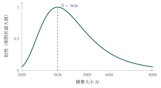

STEP II 2000，第 13 題
繼續之前，請先閱讀題目（原題為英文）。題目載於 STEP Support Programme 的題目資料庫： step.maths.org/questions/00-s2-q13
引子
一個島上住了多少隻田鼠？逐隻去數是不可能的：牠們會躲藏，會走動，而且長得一模一樣。不過，你可以先捉一些，做上記號，放走，然後再捉一批。假如有 \(200\) 隻做了記號，而第二次捉到的 \(200\) 隻當中有 \(11\) 隻帶有記號，那麼整個種羣中大約有 \(\frac{11}{200}\) 帶有記號，所以種羣的大小約為 \(200 \times \frac{200}{11} \approx 3636\)。
這種標記重捕法（capture–recapture）用於估計魚類、鳥類和鯨魚的數量，也用於估計吸毒者、無家者和戰爭傷亡者的人數，即任何無法完全點算的總體。這道題用最大似然（maximum likelihood）原理為這個直觀的估計打下穩固的基礎。最大似然是統計估計中最重要的思想：選取使觀察到的數據出現概率最大的那個未知量的值。
動筆之前
種羣共有 \(N\) 隻田鼠，其中 \(200\) 隻帶有記號。現隨機抽取 \(200\) 隻作為樣本。恰好有 \(11\) 隻帶有記號的概率是多少？
從 \(200\) 隻有記號的田鼠中選出 \(11\) 隻，再從 \(N - 200\) 隻沒有記號的田鼠中選出 \(189\) 隻，而等可能的樣本共有 \(\binom{N}{200}\) 個： \[p_N = \frac{\binom{200}{11}\binom{N - 200}{189}}{\binom{N}{200}}.\] 這就是超幾何分佈（hypergeometric distribution）。
逐步解題
階段 1 似然
把含有 \(N\) 的二項式係數（binomial coefficient）展開寫出， \[\binom{N - 200}{189} = \frac{(N - 200)!}{189!\,(N - 389)!}, \qquad \binom{N}{200} = \frac{N!}{200!\,(N - 200)!},\] 所以 \[p_N = \binom{200}{11}\frac{200!}{189!}\cdot\frac{\bigl((N - 200)!\bigr)^2}{N!\,(N - 389)!} = k\frac{\bigl((N - 200)!\bigr)^2}{N!\,(N - 389)!}. \qed\] 把數據固定，視之為未知量 \(N\) 的函數時，\(p_N\) 稱為似然（likelihood）。
階段 2 對整數求最大值
\(N\) 是整數，所以用微積分並不方便。不如比較 \(p_{N+1}\) 與 \(p_N\)。兩者之比何時大於 \(1\)？
大部分階乘都會互相約去： \[\frac{p_{N+1}}{p_N} = \frac{(N - 199)^2}{(N + 1)(N - 388)}.\] 當 \((N - 199)^2 > (N + 1)(N - 388)\) 時，這個比大於 \(1\)，即 \(N^2 - 398N + 39601 > N^2 - 387N - 388\)，亦即 \(11N < 39989\)，\(N < 3635.4\)。所以 \(p_N\) 一直遞增至 \(N = 3636\)，其後遞減：最大似然估計值為 \[\hat N = 3636. \qed\] 這正是 \(\frac{200 \times 200}{11} = 3636.4\) 的整數部分，也就是那個直觀的估計。
階段 3 第三個樣本
抽取第二個樣本之後，其中 \(189\) 隻沒有記號的田鼠也被做上記號，所以現在共有 \(389\) 隻田鼠帶有記號。取 \(N = 3636\)，則有 \(3636 - 389 = 3247\) 隻沒有記號。第三個含 \(200\) 隻田鼠的樣本中恰好有 \(j\) 隻帶有記號的概率為 \[\frac{\binom{389}{j}\binom{3247}{200 - j}}{\binom{3636}{200}}.\] 這些概率（對 \(j = 0, 1, \ldots, 200\)）之和必定等於 \(1\)，由此即得該恆等式。■

回顧
把數據的概率看成未知量的函數。似然把慣常的觀點倒轉過來：數據固定不變，參數（parameter）才是變量。
用比值求離散最大值。比較相鄰兩項，便找出了一個整數變量函數的最大值所在。
概率之和為 \(1\)。把一個分佈對所有結果求和，便證明了一個組合恆等式（范德蒙恆等式，Vandermonde’s identity）。
背後的數學
最大似然
最大似然原理由費雪（Ronald Fisher）在 1910 至 1920 年代發展出來，內容是：以使觀察到的數據出現概率最大的那個值，作為未知參數的估計。它是至今應用最廣的估計方法，由以曲線擬合數據，到訓練機器學習中的神經網絡，無一不用；神經網絡的「損失函數」（loss function）通常就是負對數似然。費雪證明了，對於大樣本，最大似然估計值近似服從正態分佈（normal distribution），而且其精確程度不遜於任何合理的估計量（estimator），前提是模型具備某些良好性質，而這些性質對大多數日常模型都成立。不過也有重要的例外。在下一節（第 13.3 節）中，未知量是可能出現的最大值，即分佈的一個端點，在那裏最大似然估計值的表現大不相同：它的誤差並不近似服從正態分佈，而且誤差是以 \(\frac1n\) 而非 \(\frac{1}{\sqrt n}\) 的速度縮小。
這個估計有多精確？
圖 13.2.1 顯示似然曲線很寬闊：\(11\) 次重捕所提供的信息並不多。粗略計算一下：第二個樣本中有記號田鼠的數目近似服從泊松分佈（Poisson distribution），平均值為 \(\frac{200 \times 200}{N}\)，所以其標準差（standard deviation）約為 \(\sqrt{11} \approx 3.3\)，相對誤差約為 \(30\%\)，而這個誤差會傳遞到 \(N\) 的估計上。若要把 \(N\) 的估計誤差控制在 \(10\%\) 以內，生物學家需要大約 \(100\) 次重捕。統計學家還會修正這個簡單估計的輕微偏差（bias），採用查普曼估計量（Chapman estimator）\(\frac{(M + 1)(C + 1)}{R + 1} - 1\)，其中 \(M\) 和 \(C\) 是兩次捕捉的數量，\(R\) 是重捕到的數目。
拉普拉斯（Laplace）在 1802 年用了同樣的想法，在沒有人口普查的情況下估計法國的人口。他知道全國一年內登記的出生人數，並且就一批抽樣的市鎮而言，同時知道其人口和出生人數。他假設人口與出生人數之比在各地都相同，從而估計法國人口約為 \(28\) 百萬，甚至給出了不確定程度的度量。後來這個方法在動物種羣研究中被重新發現：C. G. J. Petersen 在 1890 年代於丹麥的峽灣為鰈魚做記號，Frederick Lincoln 則在 1930 年代使用鳥環；這個方法至今仍常被稱為林肯—彼得森（Lincoln–Petersen）估計量。
思維技巧
要估計一個未知量，先把你所觀察到的結果的概率寫成該未知量的函數，然後求其最大值。
在大學裏，最大似然是統計推斷（statistical inference）的骨幹，並有一套理論說明估計值有多精確（費雪信息量，Fisher information），以及如何比較互相競爭的模型（似然比檢驗，likelihood ratio test）。
延伸練習
一般公式。若有 \(M\) 隻動物做了記號，而第二個含 \(C\) 隻動物的樣本中有 \(R\) 隻帶有記號，證明 \(N\) 的最大似然估計值是 \(\frac{MC}{R}\) 的整數部分。
范德蒙恆等式。考慮從 \(a\) 名女士和 \(b\) 名男士中選出 \(c\) 人組成委員會的方法數目，以此證明 \(\sum_j\binom{a}{j}\binom{b}{c - j} = \binom{a + b}{c}\)。
擲硬幣。一枚硬幣擲出正面的概率 \(p\) 未知，擲 \(n\) 次後觀察到 \(h\) 次正面。證明 \(p\) 的最大似然估計值是 \(\frac hn\)。
沒有重捕。如果第二個樣本中沒有任何帶記號的田鼠，最大似然估計值會變成怎樣？這說明了這個方法的甚麼特點？
延伸閱讀
David Spiegelhalter, The Art of Statistics（Pelican），談估計與不確定性。
George Seber, The Estimation of Animal Abundance（Blackburn）。標記重捕法的標準參考書。
John Rice, Mathematical Statistics and Data Analysis（Duxbury）。數理統計的入門課本，內容包括最大似然。